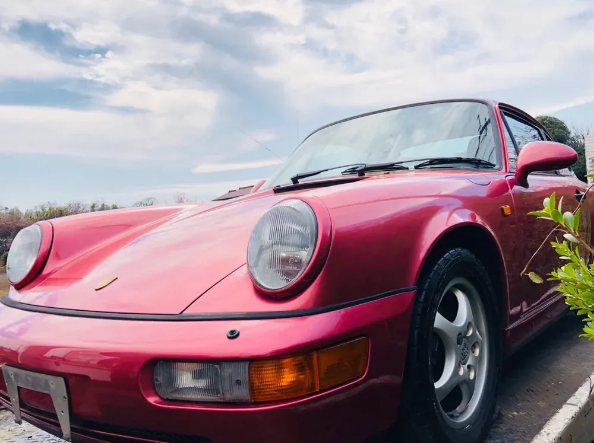

長く大切にされてきた一台を、次の道へ
旧車・輸入車買取クラシックカー・希少車も

ポルシェ・フェラーリ・ランボルギーニなど、
旧車・輸入車のご相談をお受けします。
国産の旧車・名車も、全車種ご相談ください。
北海道から沖縄まで、全国どこでも引取り無料です。
高額な車両も、まずは写真と車検証でご相談ください。
当社が取り扱った旧車・輸入車の一部
※掲載している車両は、当社がこれまでに取り扱った車両の一部です。
全車種・全モデルの旧車のご相談をお受けします
旧車・絶版車・クラシックカー・ネオクラシック（昭和〜平成の名車）まで、ポルシェ・フェラーリ・ランボルギーニをはじめ、輸入車・国産車を問わずご相談いただけます。ハコスカ・ケンメリ・ハチロク（AE86）・S30Z・スカイラインGT-R・空冷ポルシェ・ナナサンカレラ・ワーゲンバス・クラシックミニなど、人気の旧車・絶版車もお任せください。下に挙げたのは車種の一例です。ここに載っていない車種や、年式・グレードが分かれる車も、まずはご相談ください。
車種名をタップすると、参考イメージが開きます。
PORSCHE（ポルシェ）
FERRARI（フェラーリ）
LAMBORGHINI（ランボルギーニ）
MERCEDES-BENZ（メルセデス・ベンツ）
BMW
JAGUAR・DAIMLER（ジャガー・ダイムラー）
ASTON MARTIN（アストンマーティン）
LOTUS・MG・TRIUMPH ほか（イギリススポーツ）
MINI・LAND ROVER・ROLLS-ROYCE・BENTLEY ほか
ALFA ROMEO（アルファロメオ）
LANCIA・MASERATI・FIAT・DE TOMASO（イタリア車）
FRANCE（フランス車）
GERMANY・SWEDEN（ドイツ・北欧のその他）
CHEVROLET・FORD（アメリカ車 1）
DODGE・PLYMOUTH・PONTIAC ほか（アメリカ車 2）
TOYOTA（トヨタ）
NISSAN・DATSUN（日産・ダットサン）
HONDA（ホンダ）
MAZDA（マツダ）
MITSUBISHI・SUBARU・SUZUKI・ISUZU・DAIHATSU
「S30」「R32」「964」などのモデルコードがわかれば、お知らせください。わからない場合は、車検証の写真で車名・型式・年式を確認します。
こんな状態の旧車・輸入車もご相談ください
エンジンがかからない車も、そのままの状態でご相談ください。
事故や故障で動かない車、修復歴のある車も対象です。
車庫や敷地に長年置いたままの車も、写真でご相談ください。
車検が切れている車もご相談いただけます。
レストア途中の車や、部品取りの車もご相談ください。
海外への輸出ルートがあるため、年式が古い車も査定できます。
全国対応・引取り無料について
北海道から九州・沖縄まで、全国のお客様から旧車・輸入車を買取しています。
不動車・車検切れの車も、積載車で引取りに伺います。引取り費用はかかりません。
条件に合意いただいた後、お支払いの方法をご案内します。
ご依頼の流れ
LINEで外観・内装・エンジンルーム・車検証の写真を。わかる範囲で大丈夫です。
車両の状態や仕様を確認し、買取条件と引取り方法をご案内します。
条件に合意いただいた後、引取りと手続きを進めます。抹消登録などは無料で代行します。
旧車・輸入車を手放す前に確認したいこと
旧車や輸入車は、同じ車種でも年式・仕様・状態・保管環境によって評価が大きく変わります。査定を依頼する前に、次のものを用意しておくとスムーズです。
| 用意するもの | ポイント |
|---|---|
| 車検証 | 車名・型式・年式の確認に使います |
| 写真 | 外観4方向・内装・エンジンルーム・傷や錆の箇所 |
| 整備記録・取扱説明書 | あれば、これまでの管理状況がわかります |
| スペアキー・純正部品 | 外した純正パーツや付属品もお知らせください |
| 車の状態 | エンジンがかかるか、事故・修復の有無、保管場所 |
長く動かしていない車や、車検が切れている車もそのままの状態でご相談いただけます。無理に直したり、洗車して傷つけたりする必要はありません。
高額になりやすい車は、比べてから決めるのが安心です。比較したい旨をお伝えいただければ、条件をそのままご案内します。
よくあるご質問
ポルシェ・フェラーリ・ランボルギーニなど、輸入車の高級車も相談できますか？
はい。ポルシェ、フェラーリ、ランボルギーニなどの輸入車のご相談をお受けしています。高額になる車両も、まずは写真と車検証でご相談ください。金額は車両の状態や仕様を確認したうえでご案内します。
旧車や輸入車を、できるだけ高く買い取ってくれる会社を探しています。
当社は海外へ輸出するルートも持っているため、国内では値段がつきにくい旧車・輸入車も査定できます。金額は車両の状態や仕様を確認してからご案内します。他社と比べてから決めていただいて大丈夫です。
事故車や故障車のポルシェ・フェラーリ・ランボルギーニでも買取できますか？
はい。事故車・故障車・修復歴のある車もご相談ください。状態を確認したうえで、買取の可否と条件をご案内します。
海外へ輸出するための買取もしていますか？
はい。当社は海外への輸出ルートを持っています。年式が古い車や、国内で評価されにくい車もご相談ください。
車種やモデルに決まりはありますか？
特定の車種に限定していません。ポルシェ・フェラーリ・ランボルギーニをはじめ、輸入車・国産の旧車も全車種ご相談ください。
車種名やモデルコード（型式）がわからなくても相談できますか？
はい。「S30」「R32」「964」などのモデルコードがわかればお知らせください。わからない場合は、車検証の写真で車名・型式・年式を確認します。
絶版車やネオクラシック（昭和〜平成の名車）も対象ですか？
はい。絶版車、ネオクラシック、クラシックカー、ヴィンテージカーなど、年式の古い車を全車種ご相談いただけます。国産車・輸入車どちらも対象です。
古い年式の車でも大丈夫ですか？
はい。年式の古い旧車やクラシックカーもご相談ください。年式が古いことで、海外で需要がある車もあります。
エンジンがかからない車や、長年動かしていない車でも買取できますか？
はい。不動車や長期保管車もご相談ください。そのままの状態で、外観・内装・エンジンルームがわかる写真をお送りください。
修復歴がある、サビやキズがある車でもいいですか？
ご相談いただけます。状態を隠さずに、わかる範囲でお知らせください。状態を確認したうえで、買取の可否と条件をご案内します。
ディーラーの下取りと、専門業者への売却は何が違いますか？
評価の基準や販売ルートが異なるため、金額が変わることがあります。高額になりやすい車ほど、比べてから決めるのが安心です。当社には海外へ輸出するルートもあります。
旧車の買取相場はどのように決まりますか？
車種・年式・グレード・走行距離に加えて、オリジナル度（純正部品が残っているか）、サビや修復歴、整備記録、書類の有無で大きく変わります。人気の高い旧車や絶版車は、年式が古くても相場が上がっていることがあります。写真を送っていただければ、現在の相場をもとにご案内します。
ハコスカ・ケンメリ・ハチロク・スープラ・GT-Rなど、国産の旧車（JDM）も高く売れますか？
はい。日本の旧車・スポーツカーは「JDM」として海外でも人気があり、アメリカの25年ルールの対象になる年式の車は特に需要があります。当社は海外へ輸出するルートを持っているため、国内の買取店とは違う基準で査定できます。
空冷ポルシェ（ナロー・930・964・993）も買取できますか？
はい。空冷ポルシェは当社が特に力を入れている車種です。エンジンがかからない車、長期保管でホコリをかぶった車、レストア途中の車もご相談ください。
旧車を少しでも高く売るコツはありますか？
無理に修理や洗車をせず、そのままの状態でご相談ください。取扱説明書・整備記録簿・外した純正部品・スペアキーなどがあれば、査定のときに一緒にお知らせいただくとプラスになることがあります。
出張査定はできますか？
はい。まずは写真と車検証でご案内し、必要に応じて日本全国どこでも出張査定・引取りに伺います。引取り費用は無料です。
いくらで買い取ってもらえますか？
車種・年式・仕様・状態によって大きく変わるため、写真と車検証などを確認してからご案内します。電話やLINEでのご相談・査定は無料です。
遠方の車でも引取りに来てもらえますか？
はい。北海道から沖縄・離島まで、日本全国どこでも引取り無料で伺います。動かない車や車検切れの車も、積載車で引取ります。
廃車や名義変更の手続きはどうなりますか？
抹消登録などの書類手続きは、当社が無料で代行します。必要な書類は、車検証の写真を送っていただいた後にご案内します。